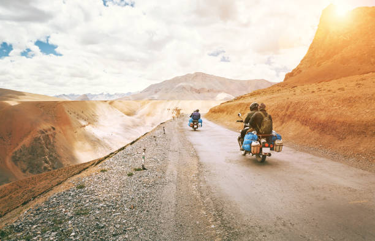
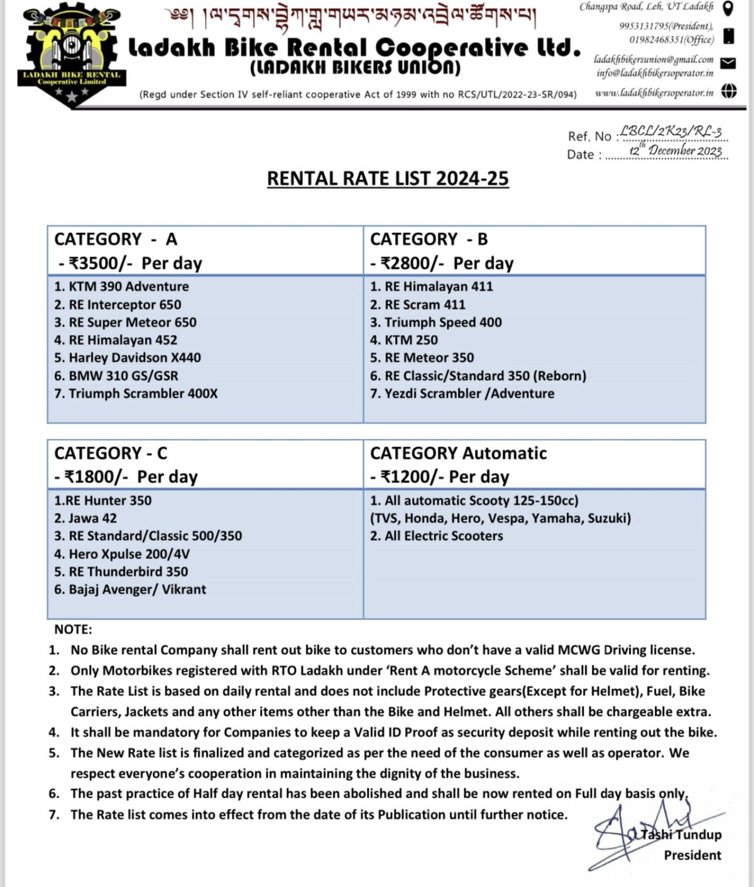
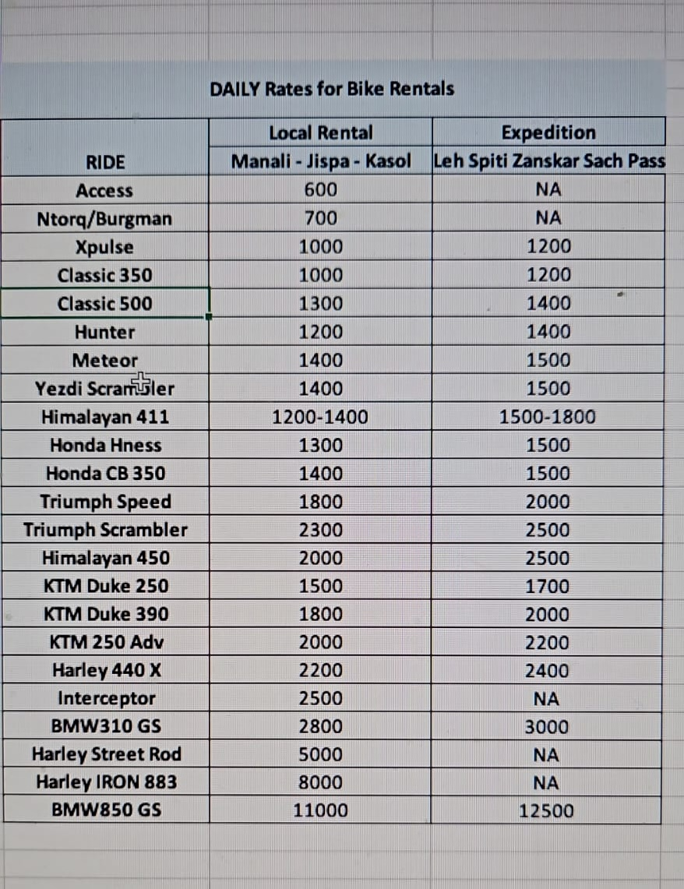

The new season of Leh – Ladakh is on the horizon and almost all the adventure-loving tourists are eagerly waiting for the Manali – Leh Highway and Srinagar – Leh Highway to open up. Ladakh is the most popular adventure destination in India which is embraced very highly by the bikers community as well.
Very soon the roads leading to Leh Ladakh in the Himalayas will be buzzing with the sound of dug.. dug.. dug.. dug.. dug… However, not everyone has the luxury to own a bike and ride to Ladakh on it.
Hence, many of us who do not own a bike rely on bike rentals in Leh – Ladakh. Each year, people like us, who do not own a bike, wait for Leh – Ladakh Motor Bike Rental Association to publish the new rates. The wait is over for Leh – Ladakh bike rental rates 2024-25 season and the bike rental association decides these rules.
What are the Leh Ladakh bike rental rates in 2024?
Unlike the Leh Ladakh Taxi Rates 2023 – 24, the Ladakh Motor Bike Rental Association followed a different direction and decided to hike the bike rental rates for the year 2024-25 for most bikes and also created different categories for bike rentals based on the type and model of these bikes. I strongly feel that the market is getting pricier every year, bikes are always in shortage, and there is always all the fuss of not allowing the outside rental bikes for sightseeing in Ladakh.
The existence of a motorbike union effectively standardizes rental rates. This mandates every business participant to adhere to the set price, thus controlling rate volatility. Consequently, it provides clarity to tourists about the appropriateness of the rental price.
Leh – Ladakh Bike Rental Rates 2024-25
As previously mentioned, bike rental prices will remain unchanged for the year 2024-25, continuing the rates established last year.
Even the much popular and awaited mountain bike by Royal Enfield, “Himalayan” did not see any rise in price despite its popularity. Please keep in mind that “Himalayan” is already cost at a price tag of Rs 2500 per day 😉 …
Frankly speaking, the feedback has not been that great by many of the readers and members of the DwD Community in comparison to the price paid. However, take your call and above all understand that you must choose a bike that you are comfortable riding not what others are boasting about on their Facebook profiles 😉
Leh Bike Rental Rates 2024-25
The most popular and older Royal Enfield Classic 500cc and Royal Enfield Standard 500cc are available for Rs 1800. The new RE Classic/Standard Reborn and RE Himalayan 411 are rented for Rs 2800 per day. Then comes Jawa, Hunter, and Xpulse at a price tag of Rs 1800 per day while Royal Enfield Himalayan 411cc costs Rs 2800 per day and Royal Enfield Interceptor is available for Rs 3500 per day in Leh. Luxury bikes like BMW/GSR 310cc/KTM are available for Rs 3500 per day in Ladakh. Hero Xpulse 200 is available in Leh for Rs 1800 per day.
There is an option of Bajaj Avenger 220 cc at Rs 1800 per day. You can also get a Scooty in Leh Ladakh for as low as Rs 1200 per day which should be enough for Leh local sightseeing day trips at least. Please note that these bikes are also available for half-day rentals as well.
You can also advance book your bike rentals in Leh and Manali online by checking out for some SPECIAL DISCOUNTED RATES available to all the readers/followers of the DwD website through our Destination Specialists.
In order to avail these discounts, you can use the online booking form at the link: Advance book your bike rentals in Leh online
Here is the complete list of Leh – Ladakh Bike Rental Rates 2024-25:
Manali Bike Rental Rates 2024-25
Check out the pricing details for Manali Bike Rentals below. The rates are categorized into local rentals and expedition rentals for your convenience.
Bike Ride Accessories on Rent in Leh – Ladakh
The following are some of the standard rates of some common bike riding accessories per day. If you are not carrying any bike riding accessories with you on the Leh Ladakh trip, you do not need to worry about it as these bike accessories are easily available in Leh.
Common FAQs – Bike Rental in Leh – Ladakh
Let’s look at some of the most commonly asked questions about renting a bike in Leh Ladakh and Ladakh Bike Rental Rates 2024-25.
These answers will help you with your questions and also help you plan a successful bike trip to Leh Ladakh.
Can I get Ladakh Carrier on Rent in Leh?
You should know that the Luggage Carrier / Saddlebag costs Rs 150 extra per day with the bike you will rent
Can I get a bike on rent for half a day?
Half-day rental means you need to return the bike by 2.00 PM else the full-day charges will apply. Starting this year, 2024, there is no option to rent a bike for half a day.
Can I ride Delhi or Manali bikes in Ladakh?
Bikes rented outside Leh are not allowed for sightseeing inside Ladakh including Pangong Tso, Nubra Valley, Khardung La, etc. Outside rented bikes can only be used to enter Leh from Srinagar – Leh Highway or Manali – Leh Highway.
Hence, for local sightseeing, you need to rent a bike again from a bike rental shop in Leh. To know more about this rule and the present situation, please refer to the link: Bikes Rented Outside Leh Banned in Ladakh.
The Ladakh Motorbike Rental Association has set up check-posts at various sightseeing locations and they are mostly very active in checking especially in season time.
Hence, do not get into an ugly situation in case confronted and at fault. It will most likely ruin your trip and the days you took off from the office. The best bet in such cases is to act ignorant of the rule and agree to return to Leh to rent a bike motorbike from Leh for sightseeing.
Can I take Manali bikes to Leh Ladakh?
Some bike rental shops in Manali also have tie-ups with bike rental shops in Leh. In such tie-ups, which are very rare to find as of 2024, if you present back the slip of bike rental charges from Leh shop to Manali guys, then they will waive 50% of rental charges on their bike rent for those number of days. However, you must verify such tie-ups and get them in writing before striking the deal.
Can I take a relative’s bike or my own bike to Ladakh?
Private bikes are completely allowed to go anywhere in Ladakh. The private bike should be in your name or the name of your father/mother. Mostly if there is any documented proof associated with your and the bike owners’ identities, it works.
Can I rent a bike in Manali and drop in Leh or rent a bike for one-way only?
The one-way bike rental is quite costly and leaves a big dent in your pocket. Sometimes like 12K for just the pickup from Manali or Leh. Be sure if you are sure to make that expenditure or if at all the one-way ride is worth the money spent. The same is true for the trip from Leh to Srinagar one-way bike rentals.
My suggestion is unless you are a hardcore biker and cannot live up without a passion for biking, it is not wise to spend that much money just for the pickup of the bike. Better reach Leh from Manali or Srinagar in a taxi and then hire a bike in Leh – Ladakh itself. The roads within Leh – Ladakh provide you with ample adventure opportunities 🙂

Conclusion
I hope this article helps you understand the updated bike rental rates in Leh Ladakh or Ladakh Bike Rental Rates 2024-25. It is welcoming news that the union decided not to increase the rates this year as well. I will also be very interested to understand in case any rules for allowing outside rental bikes have changed or relaxed a bit or not, this year. There will likely be some impact this year. Maybe they are not that enforced stringently but only time will tell 🙂